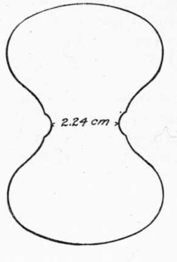
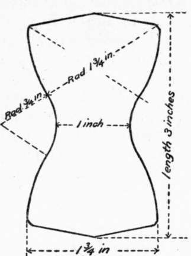

175. Steinbruch's Mortar Mixer
Description
This section is from the book "Cement And Concrete", by Louis Carlton Sabin. Also available from Amazon: Cement and Concrete.
175. Steinbruch's Mortar Mixer
Steinbruch's Mortar Mixer is a German machine operating on a different principle. It consists of a circular shell having on its upper side and near its outer edge a circular groove, or trough, to receive the mortar to be mixed. In this trough rests a wheel on a fixed horizontal axis, which is above the pan and normal to the axis of the pan. A cross-section of the rim of the wheel is a semicircle fitting the groove in the pan. The gearing is such that the pan is made to revolve about its vertical axis, and the wheel about its horizontal axis, the inner surface of the trough and the under side of the periphery of the wheel where the two are in contact moving in the same direction at a given instant. The mortar is thus rubbed between the two. Small blades, or plows, scrape the sides of the trough as the latter revolves, thus keeping the mortar in the bottom of the trough. The wheel and the plows are mounted on hinged axes, or supports, so that they may be raised from the pan when the mortar is to be cleaned out. The mixing requires about two and one-half minutes. The price of the machine is about $130.
176. The amount of gaging which a mortar receives has an important effect on its consistency and the strength it will attain. This was found to be the case in several experiments where mortar gaged eight minutes in the box described above, gave from 15 to 35 per cent, greater strength at one year than that which was gaged but two minutes, the amount of water used being the same in the two cases. Experiments on this point are given in Table 78, § 364. It is therefore important to eliminate, if possible, the variations which must follow hand mixing, but as yet no apparatus has seemed to meet with general approval, though among machine mixers those similar to that used by Mr. Faija seem to have given the best results. The hoe and box method described in § 173 partially eliminates the personal equation, and for facility of operation and thoroughness of mixing leaves little to be desired.
Fig. 3. FORM OF BRIQUET USED ON THE CONTINENT OF EUROPE.
Fig. 4. Form of briquet used in the united states.
177. Form Of Briquet
The shape and size of the briquet have been the subject of much discussion and experiment. Mr. John Grant, a pioneer in tensile tests, tried many forms before finally adopting one quite similar to the form afterward recommended by the Committee of the Amer. Soc. C. E. in 1885. Mr. Alfred Noble also made a series of experiments on different styles of molds and clips, and presented the results in a paper read before the American Society of Civil Engineers.1
There are two forms of mold that are now in quite general use. On the continent of Europe the form most generally used is that shown in Fig. 3. It has a cross-sectional area of five square centimeters (.775 sq. in.) at the smallest place, and the heads of the briquet are elliptical in form, the major axes being transverse to the briquet axis. The curve forming the side of the briquet in the central portion is of very short radius, giving the effect of a semicircular notch on either side of the briquet at the smallest section. These notches have the effect of confining the break to this place.
The other form of mold is the one mentioned above as recommended by the Amer. Soc. C. E. Committee, and used in America and England. A briquet of this form is shown in Fig. 4. The cross-sectional area at the center is one square inch, and the increase of section toward the ends is gradual, the radius of the curve at the side of the briquet being 3/4 inch.
178. Area Of The Breaking Section
Formerly a section of 2\ square inches was more commonly used here and in England, while an area of 16 square centimeters (2.48 sq. in.) was common in France and other continental countries. The larger the area of the breaking section, the smaller will be the computed strength per square inch; this point seems fairly well established, although the experiments recorded in a very excellent paper by Mr. Eliot C. Clarke2 indicate no apparent difference in strength between briquets 1 square inch and 2 1/4 square inches in section.
M. Durand-Claye found that the tensile strength of a briquet varied more nearly as the perimeter than as the area of the section. The experiments of M. Candlot do not point to this conclusion, though they clearly show that the indicated strength per square centimeter is very much greater for a briquet having an area of five square centimeters at the small section than for a briquet of 16 square centimeters area.
Mr. D. J. Whittemore 3 experimented with briquets that were circular in cross-section. He found that while the ultimate strength of a briquet was about proportional to the periphery of the breaking section for the ordinary solid briquet, yet if a core were inserted in the mold, giving the cross-section an annular form, this proportion was not maintained. It was concluded from this that the apparent peripheric strength could not be explained by saying that the surface of the briquet had gained a greater strength than the interior, but that the explanation must rather be sought in the method of applying the stress in breaking the briquet. The force being communicated to the surface of the briquet, the stress is not uniformly distributed throughout the breaking section, because of the low elasticity of the mortar.
1 Trans. Amer Soc. C. E., Vol. ix, p. 186. 3 Trans. Amer. Soc. C. E., Vol. xiv, p. 141.
3 "Tensile Tests of Cements," etc. Trans. A. S. C. E., Vol. ix, p. 329.
M. Paul Alexandre showed that the difference in strength per unit area decreased with age, although it did not entirely disappear at one year. It would therefore seem that the explanation of this phenomenon may be found in a combination of these two causes; more rapid hardening of the smaller specimens, and greater inequality of stress in breaking the briquets of larger section.
Continue to:
- prev: 174. Machine For Mortar Mixing
- Table of Contents
- next: 175. Steinbruch's Mortar Mixer. Continued